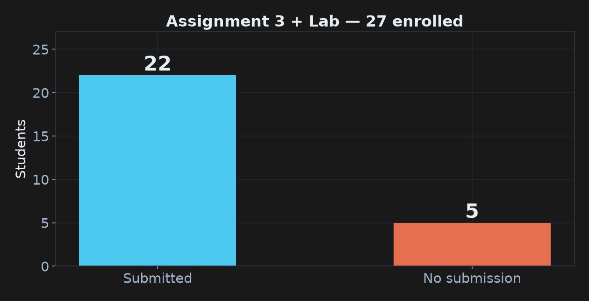
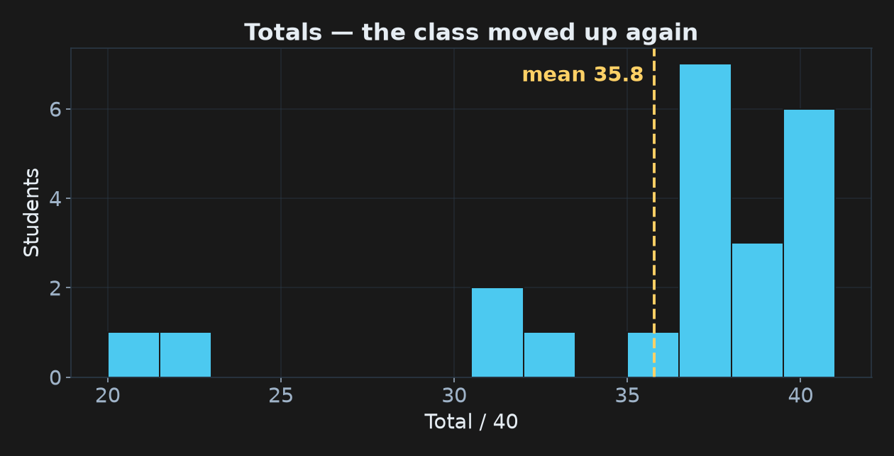
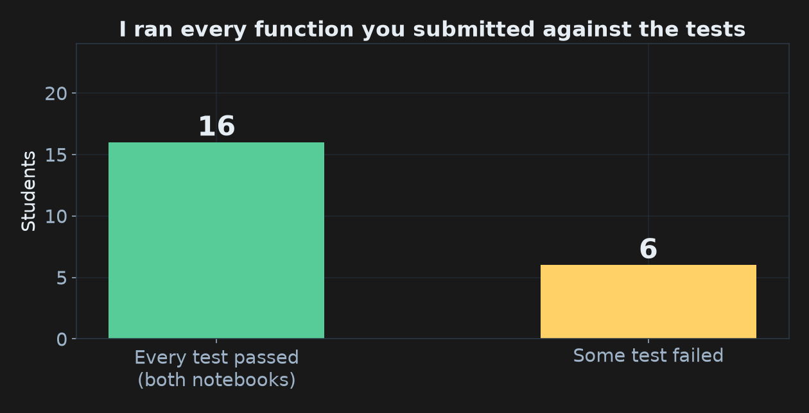
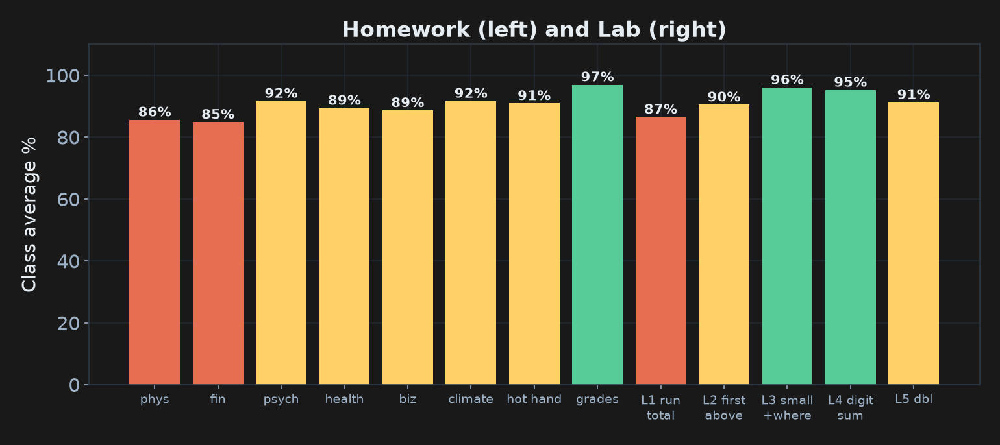
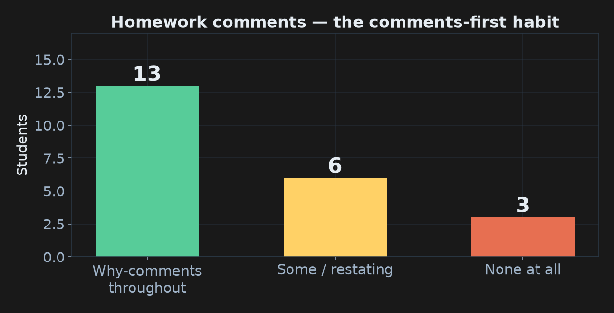

COMP 150-003 · Week 6 · All results anonymized
New this time: I didn't just read your code. I ran it.

If you're one of the 5, talk to me tonight. There's still time to catch up.

Mean about 36 / 40, and the assignment was harder than A2. Most of the points you lost weren't about Python at all. They were about process.

16 of 22 of you passed every test in both notebooks. Missing outputs weren't penalized: if your code is right, it's right. The computer is the judge now, not the screenshot.

Every problem averaged in the high 80s or 90s. What separated a 40 from a 36 was a comment, a trace row, or an indent.
Plus one thing the whole class got right.

# Stop one position early because every calculation also needs the next reading# interest first, then deposit, because order matters# stop when there are not enough weeks left to make a full window# If we started at or above the target, the loop never ranfirst_above([3, 1, 2], 10): twelve of you traced the three loop passes perfectly and then stopped, or wrote "return −1" inside the last pass, or even before the loop.| index | value | value > 10 ? | what happens |
|---|---|---|---|
| 0 | 3 | False | keep looking |
| 1 | 1 | False | keep looking |
| 2 | 2 | False | keep looking |
| — | — | loop ends | return −1 (the line after the loop) |
smallest_with_position([4, 2, 2, 9]): many traces started at index 1. That was fine (no points lost), because the loop itself starts at index 1. But look at what the first row quietly depends on:| step | value | value < best ? | best | best_index |
|---|---|---|---|---|
| start | 4 | — | 4 | 0 |
| index 1 | 2 | True | 2 | 1 |
| index 2 | 2 | False | 2 | 1 |
| index 3 | 9 | False | 2 | 1 |
best = values[0]). Every comparison below it leans on that value. Write the start row whenever the setup matters: it's where "why does my answer start at 0?" bugs live.def velocities(positions, dt):
result = []
for i in range(len(positions) - 1):
result.append((positions[i+1] - positions[i]) / dt)
return result # ← one indent too far| i | result after append | next line |
|---|---|---|
| 0 | [2.0] | return: the function ends here, on the first pass |
return inside the loop ends on pass one. An append outside the loop keeps only the last value. An else lined up with for instead of if means something else entirely. A one-row trace catches all three instantly.doublings_to_reach(8, 5): almost everyone traced it correctly as one row. The condition 8 < 5 is False on arrival, the body runs zero times, and the answer is 0.| current | keep going ? | doublings |
|---|---|---|
| 8 | 8 < 5 → False | 0 |
This was the last week the tests were handed to you.
You already know what a good test looks like: every ⭐ you traced was one.